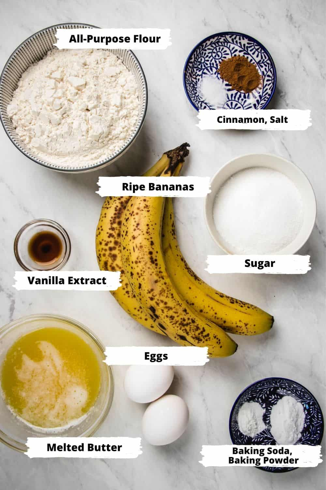

Banana Bread Recipe
Ingredients
- 2 cups all-purpose flour
- 1 1/2 teaspoon baking powder
- 1/2 teaspoon baking soda
- 1/4 teaspoon salt
- 1/4 teaspoon ground cinnamon
- 1/8 teaspoon nutmeg
- 2 eggs
- 2 teaspoons vanilla
- 1 1/2 cups mashed ripe bananas (5 medium)
- 1 cup sugar
- 1/2 melted butter or margarin or cooling oil
- 1/4 cup chopped walnuts

Directions
-
Preheat oven to 350oF. Grease bottom and 1/2 inch up the sides
of one 9x5x3-inch or two 7-1/2x3-1/2x2-inch loaf pans; set aside. In a
large bowl combine flour, baking powder, baking soda, salt, cinnamon,
and nutmeg. Make a well in center of flour mixture; set aside.
-
In a medium bowl combine eggs, banana, sugar, and oil. Add egg mixture
all at once to flour mixture. Stir just until moistened (batter should
be lumpy). Fold in nuts. Spoon batter into prepared pan(s).
-
Bake for 55 to 60 minutes for 9x5x3-inch pan or 40 to 45 minutes for
7-1/2x3-1/2x2-inch pans or until a wooden toothpick inserted near
center comes out clean (if necessary, cover loosely with foil the last
15 minutes of baking to prevent overbrowning). Cool in pan on a wire
rack for 10 minutes. Remove from pan. Cool completely on a wire rack.
Wrap and store overnight before slicing.